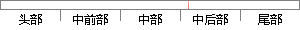

在实现阶段，这些抽象组件被细化为实际的组件，比如具体某个类或者对象。
片段位置图

相似结果|
相似片段 1：架构是一个系统的草图。软件架构描述的对象是直接构成系统的抽象组件。各个组件之间的连接则明确和相对细致地描述组件之间的通讯。在实现阶段，这些抽象组件被细化为实际的组件，比如具体某个类或者对象。在面向对象领
相似片段 2：大型软件系统各个方面的设计。软件架构描述的对象是直接构成系统的抽象组件。各个组件之间的连接则明确和相对细致地描述组件之间的通讯。在实现阶段，这些抽象组件被细化为实际的组件，比如具体某个类或者对象。在面向对象领域中，组件之间的连接通常用接口来实现。
相似片段 3：直接构成系统的抽象组件。各个组件之间的连接则明确和相对细致地描述组件之间的通讯。在实现阶段，这些抽象组件被细化为实际的组件，比如具体某个类或者对象。在面向对象领域中，组件之间的连接通常用接口来实现。软件体系结构是构建计算机软件实践的基础。
相似片段 4：。软件架构是一个系统的草图。软件架构描述的对象是直接构成系统的抽象组件。各个组件之间的连接则明确和相对细致地描述组件之间的通讯。在实现阶段，这些抽象组件被细化为实际的组件，比如具体某个类或者对象
相似片段 5：组件。各个组件之间的连接则明确和相对细致地描述组件之间的通讯。在实现阶段，这些抽象组件被细化为实际的组件，比如具体某个类或者对象。在面向对象领域中，组件之间的连接通常用接口来实现。软件体系结构是构建
相似片段 6：各个方面的设计。软件架构是一个系统的草图。软件架构描述的对象是直接构成系统的抽象组件。各个组件之间的连接则明确和相对细致地描述组件之间的通讯。在实现阶段，这些抽象组件被细化为实际的组件，比如具体某个类
相似片段 7：的连接则明确和相对细致地描述组件之间的通讯。在实现阶段，抽象组件被细化为实际的组件，比如具体某个类或者对象。在面向对象领域中，组件之间的连接通常用接口来实现。资金业务管理系统软件架构的核心是运用COM
相似片段 8：阶段，这些抽象组件被细化为实际的组件，比如具体某个类或者对象。在面向对象领域中，组件之间的连接通常用接口来实现。软件体系结构是构建计算机软件实践的基础。与建筑师设定建筑项目的设计原则和目标，作为绘图员
相似片段 9：。在系统实现的阶段，这些抽象组件被最终细化成为实际实现的组件，比如具体某个类或者具体的对象。在面向对象概念中，组件之间的连接通常是由接口来实现。3)软件体系结构是构建企业软件的实现基础。与建筑师设定
相似片段 10：化为实际的组件，比如具体某个类或者对象。在面向对象领域中，组件之间的连接通常用接口来实现。软件架构是在计算的算法和数据结构之外设计并确定系统整体结构。RUP中的架构视图：在RUP中典型的架构视图集为
|
※ 片段修改建议 ※
近似词参考：- 实际：现实
- 比如：好比 譬如
- 具体：详细
- 或者：或 大概
- 对象：工具
系统自动生成语句：在实现阶段，这些抽象组件被细化为现实的组件，好比详细某个类或工具。
注：本片段修改建议为系统自动生成，仅供参考。